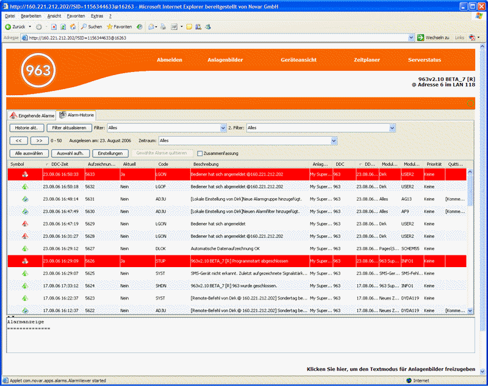

Symbol
Beschreibung

Aufgetretener Alarm, der noch nicht quittiert wurde.

Aufgetretener Alarm, der bereits quittiert wurde.

Aufgehobener Alarm, der noch nicht quittiert wurde.

Aufgehobener Alarm, der bereits quittiert wurde.
Die Alarmanzeige ist beim Zugriff über einen Web-Browser verfügbar, der den Grafikmodus der 963 unterstützt. Sofern Sie die Berechtigung zur Alarmanzeige haben, wird auf der 963 Server-Startseite die Alarmanzeige angezeigt. Sie zeigt die eingegangenen Alarme an. Um die Anzahl der angezeigten Daten zu reduzieren, kann man diese Alarme nach Art filtern.

Die Alarmanzeige hat zwei Register:
Farben geben an, ob es sich bei dem Alarm um einen aufgetretenen oder aufgehobenen Alarm handelt. Eine rote Glocke zeigt einen aufgetretenen Alarm, eine grüne Glocke einen aufgehobenen Alarm an. Nachdem der Alarm vom Bediener quittiert wurde, erhält die Glocke ein Häkchen. Die Tabelle unten zeigt die verschiedenen Symbole.
|
Symbol |
Beschreibung |
|
|
Aufgetretener Alarm, der noch nicht quittiert wurde. |
|
|
Aufgetretener Alarm, der bereits quittiert wurde. |
|
|
Aufgehobener Alarm, der noch nicht quittiert wurde. |
|
|
Aufgehobener Alarm, der bereits quittiert wurde. |
Eine Farbcodierung in der Alarmhistorie gibt an, ob der Alarm aktuell ist. Rot bedeutet, dass der Alarm aktuell ist.
In der Alarmhistorie werden alle Alarme nach ihrer Bearbeitung gespeichert. Diese Liste speichert alle bearbeiteten Alarme in der Datenbank, unabhängig davon, ob sie vom Bediener quittiert wurden oder nicht. Die Alarme können entweder in chronologischer Reihenfolge oder in einer Zusammenfassung aufgerufen werden.
Zusammenfassung – Anzahl der jeweiligen Alarmtypen pro Punkt
Chronologische Anzeige – eine systematische Alarmhistorie in zeitlicher Reihenfolge
Das Register Eingehenden Alarme enthält die letzten 100 Alarme in der Reihenfolge ihres Eingangs. Neue Alarme erscheinen oben in der Liste, wenn sie erstmals eingegangen sind.